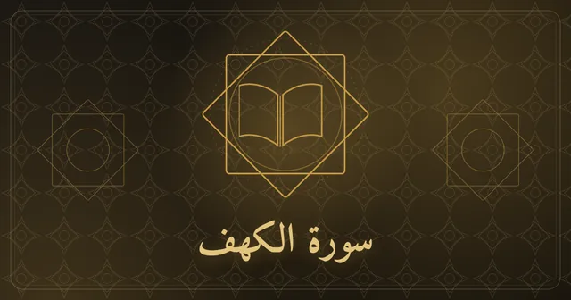
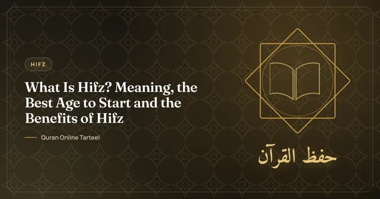
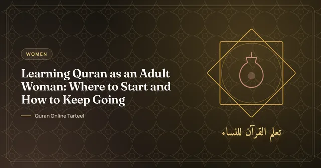
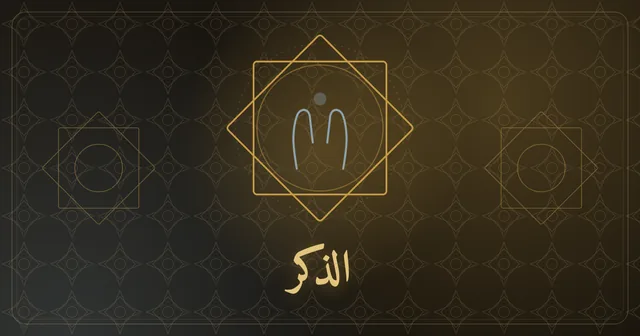
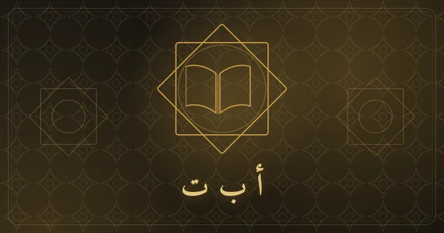
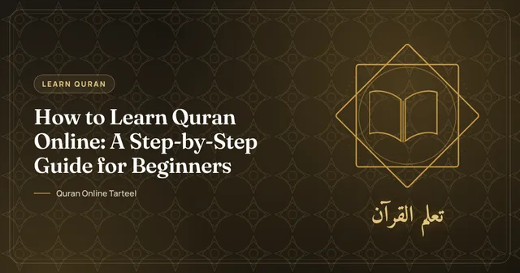
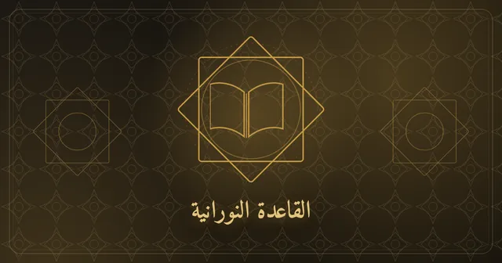

Online Quran Translation and Tafseer Classes
Reading the Quran is a blessing. Understanding it changes how you pray and live. Our online Tafseer classes help you learn the meaning of the Quran word by word, with the context and lessons of each surah, explained in clear English by a female teacher.
From $50 a month·2 free classes first
- Word by word meaning
- Context of each surah
- Explained in English
- For women and teens
Book 2 Free Trial Classes
Completely free, nothing to pay. We reply on WhatsApp within 24 hours.
JazakAllahu khayran!
Your request is in. We will message you on WhatsApp within 24 hours, in sha Allah. We are so happy you are starting this journey with us.
Quran Translation vs Tafseer: What Is the Difference?
Translation (Tarjuma)
Translation gives the meaning of the Arabic words in English. Learning it word by word helps you understand the surahs you recite in salah.
Tafseer
Tafseer goes further. It explains the context of revelation, how scholars have understood each verse and the lessons for daily life, drawing on well-known classical works.
Our classes combine both, starting with short surahs you already know.
Translation and Tafseer Fees
Simple monthly plans: 2 or 4 days a week, or weekend classes.
Translation and Tafseer
| Class length | 2 daysa week | Popular4 daysa week | WeekendSat & Sun |
|---|---|---|---|
| 45–60 minper class | $50 | $70 | $80 |
Family discount: more than one child, or a mother and child, learning with us? You get a special family discount. Just ask us on WhatsApp.
What Families Say About Us
What You Learn in Our Online Tafseer Classes
Word by Word Meaning
Learn the meaning of common Quranic words, so you start recognising them as you recite.
Surahs You Pray With
Begin with Al-Fatiha and Juz Amma, the surahs most often recited in salah.
Context and Lessons
Why a surah was revealed, what it teaches and how it applies to life today.
Want to understand your salah?
Start with the meaning of Al-Fatiha in your first free class.
Who Should Join Quran Translation Classes Online?
- Women who read the Quran but want to understand it
- Teenagers ready to connect with the meaning of what they memorise
- Hifz students who want meaning to support memorisation
Reading is not required to be perfect, but basic reading helps. If you are just starting, take Quran classes for beginners alongside. Sisters can see all options on our online Quran classes for women page.
More Online Quran Classes at Quran Online Tarteel
Quran Online Tarteel offers live online Quran classes with female teachers for every level. Explore our other courses and free guides.
Latest Guides from Our Blog
Free, practical articles on learning the Quran, Tajweed, Hifz, duas and salah, written by our academy.

Surah Al-Kahf on Friday: Benefits, Stories and Lessons
The authentic virtues of reading Al-Kahf every Friday, when to read it, its four stories and the trials they protect us from, plus a reading plan.

Online vs Local Quran Classes: Which Is Better for Your Child?
An honest comparison of online classes and local mosque or madrasa classes, the pros and cons of each, and how many families combine both.

Surah Al-Mulk Benefits, Meaning and How to Memorize It
What authentic hadith say about Surah Al-Mulk, its main themes, the Sunnah of reciting it at night and a two week plan to memorise all 30 verses.

Tafseer for Beginners: What It Is and Where to Start
What tafseer means, how it differs from a translation, which trusted books to start with in English and Urdu, and a simple plan for your first months.

Best English Translation of the Quran: 6 Compared (2027)
Six widely used English translations compared on style, accuracy and readability, which suits beginners, students and children, and Urdu options too.

10 Benefits of Reciting the Quran from Quran and Hadith
Ten virtues of reciting the Quran from the Quran and authentic hadith, with references, and simple ways to make daily recitation a habit.

Best Online Quran Classes: How to Compare Academies (2026)
A fair checklist for comparing online Quran academies, how the well-known names differ in model, and the questions to ask before you pay.

Colour-Coded Tajweed Quran Explained: What Each Colour Means
What the colours in a Tajweed mushaf usually mean, how beginners and parents can use one, and why it works best alongside a teacher.

Laylatul Qadr 2027: Last 10 Nights of Ramadan Guide and Dua
When the last ten nights are expected in 2027, the dua the Prophet taught for this night, its signs and a simple worship plan for each night.

Madd in Tajweed: Types of Madd with Examples and Counts
Every common type of madd on one page: how long to stretch it, how to spot it in the mushaf and examples from the surahs you recite in salah.

Qalqalah in Tajweed: Letters, Levels and Examples
The five echoing letters of Tajweed, when the bounce is light or strong, clear examples from Juz Amma and the mistakes to avoid.

Short Surahs for Kids: The First 14 to Memorize, in Order
The fourteen short surahs most children learn first, in a sensible order, with verse counts, one-line meanings and a weekly plan that works.

How to Prepare Kids for Ramadan: 15 Ideas Parents Can Use
Practice fasts by age, a good deeds chart, child-sized Quran goals, duas to learn and fifteen simple ideas to make Ramadan the best month of the year for kids.

Makharij al-Huroof: The 17 Points of Arabic Letters Explained
Where every Arabic letter comes from, in five areas and seventeen points, with a clear chart, the letters people mix up and how to practise.

Ramadan Quran Plan: How to Finish the Quran in Ramadan
Simple reading schedules to complete the Quran in Ramadan, with plans for fluent readers, beginners, children and busy mothers, and tips to start before Ramadan.

Learn Quran in Urdu, English or Arabic: Which Is Best?
The Quran is always recited in Arabic, but explanations can be in English, Urdu or Arabic. Here is how to choose the right one for your family.

What Is Hifz? Meaning, Best Age to Start and Benefits
What Hifz means, the virtues of the hafiz in authentic hadith, the best age to begin, signs your child is ready and how part-time Hifz works.

How Long Does It Take to Learn the Quran? Realistic Timelines
Honest timelines for each stage, from the first letter to fluent Tajweed and full Hifz, for children and adults, with what speeds progress up.

Noon Sakinah and Tanween Rules: Izhar, Idgham, Iqlab, Ikhfa
The four rules that apply on almost every page of the Quran, with their letters, clear examples, a one-page chart and tips to remember them.

Islamic Stories for Kids: 8 Short Stories of the Prophets
Eight short bedtime stories from the Quran and authentic hadith, each with a simple lesson, its surah reference and questions to talk about.

Learning Quran as an Adult Woman: Where to Start
A gentle, practical guide for sisters starting or restarting the Quran: finding your level, fitting classes around life and staying motivated.

How to Perform Wudu Step by Step (with Dua After Wudu)
Every step of wudu in order, the four obligatory acts from the Quran, the dua to say afterwards, what breaks wudu and tips for children.

How to Choose a Female Quran Teacher Online: A Checklist
What qualifications matter, the questions to ask, how to judge a trial class and the safeguarding rules every family should expect.

Dua for Success, Protection and Knowledge (Arabic and English)
Authentic duas from the Quran and Sunnah for success, protection, beneficial knowledge and ease in hard tasks, each with Arabic, transliteration and meaning.

How to Memorize the Quran: A Realistic Hifz Plan and Timetable
The sabaq, sabqi and manzil system, sample timetables for children and adults, techniques that actually work and how to keep what you memorise.

Sunnah Prayers Explained: Sunnah Rakats of Each Namaz
A clear chart of fard, sunnah and Witr rakats for all five prayers, what sunnah muakkadah means, and voluntary prayers like Duha and Tahajjud.

How to Teach Quran to Kids at Home: 12 Tips for Parents
A realistic plan for busy parents: when to start, what to teach first, a 20 minute routine and 12 tips that keep children loving the Quran.

What Is Dhikr? Meaning, Types, Benefits and a Daily List
What dhikr means, why the Quran calls it the greatest act, the best words to say and a simple daily dhikr routine for busy families.

Arabic Alphabet: 28 Letters with Names, Sounds and Forms
All 28 letters in one chart, the sounds English speakers find hard, how letters join and a simple plan to learn them in weeks.

What Is Dua? Meaning, Etiquette and How to Make Dua
The meaning of dua, how the Prophet taught us to ask, the best times to make dua and short Quranic duas you can start using today.

What Is Tajweed? Meaning, Rules and Why It Matters
The meaning of Tajweed, why scholars call it a duty, the main rules in one table and the fastest way to learn it properly.

How to Pray Salah Step by Step: A Simple Guide for Beginners
Every position and every word of the prayer in order, with a rakat chart and tips for teaching children and new Muslims.

How to Learn Quran Online: A Step-by-Step Guide for Beginners
The right order to learn, how long each stage takes, what a good online class looks like and how to start this week, for children and adults.

Tajweed Rules for Beginners
The main rules of Tajweed explained simply, with examples.

Noorani Qaida Guide: Lessons, Order and Tips
What each stage of the Noorani Qaida teaches and how parents can help.

How Many Rakats in Each Prayer?
A simple chart of the fard rakats of the five daily prayers.
Begin Your Quran Journey with 2 Free Classes
One short form is all it takes. A female teacher will be ready for you or your child, at a time that works in your country.
- Female teacher for every student
- Live 1-on-1, never a crowded group
- Times for US, UK, Canada, Australia and more
- No payment until you decide to continue
Reserve Your Free Classes
Takes 60 seconds. We reply within 24 hours.
JazakAllahu khayran!
Your request is in. We will message you on WhatsApp within 24 hours, in sha Allah. We are so happy you are starting this journey with us.